8 — Non-Cartesian acquisitions
Download this tutorial as a Jupyter notebook (with NotebookUtils.jl next to it).
Radial and spiral trajectories do not land on a grid, so the Fourier operator becomes an NFFT instead of an FFT. This tutorial covers the trajectory generators, the NFFT encoding operator and its density-compensation (DCF) options, gradient-delay correction, and the NFFT accuracy/speed knobs.
Contents
- Trajectory families
- Simulating a non-Cartesian acquisition
- The NFFT encoding operator — density compensation is opt-in
- Density compensation — Pipe–Menon and Voronoi
- Iterative and regularized reconstruction
- Gradient-delay correction
- Accuracy vs. speed of the gridding
using .NotebookUtils
using Ristretto
using Ristretto: get_encoding_operator
using GeometricMedicalPhantoms: create_shepp_logan_phantom, MRISheppLoganIntensities
using MIRTjim: jim
using Plots
using NamedDims
using LinearAlgebra
using Random
using Printf: @printf
Random.seed!(0);1. Trajectory families
Ristretto ships generators for the common non-Cartesian sampling patterns. All of them return a NamedDimsArray with the coordinate axis first (:coord, one of the two names AcquisitionInfo accepts for non-Cartesian data), normalized to [-0.5, 0.5) (the NFFT.jl convention):
radial_trajectory(nsamples, nspokes; ordering)— 2D radial spokes through the k-space center.orderingisLinearOrdering()(uniform angle step),GoldenAngle()(successive spokes rotated by ≈111.25°, so any prefix of the sequence covers k-space near-uniformly), orTinyGoldenAngle(index)(a smaller member of the golden-angle family, useful for view sharing). These are types rather than symbols, so each carries its own parameters — the tiny family's index lives onTinyGoldenAngleinstead of in a separate keyword that means nothing for the other two — and a misspelling is caught when the call is made rather than inside it. A full golden-angle step swings the readout gradients through a large angle between any two consecutive spokes, and each swing drives its own eddy currents in the gradient coils; tiny golden angles keep successive spokes close together in angle, so the gradient waveform changes little from one spoke to the next and eddy currents stay suppressed, at the cost of less-uniform coverage for any short prefix of the sequence.stack_of_stars_trajectory(nsamples, nspokes, npartitions)— the 2D radial pattern repeated at Cartesian partition-encoding (kz) positions.kooshball_trajectory(nsamples, nspokes)— full 3D radial, spoke directions distributed quasi-uniformly over the sphere.spiral_trajectory(nsamples, ninterleaves; variant)— rotated copies of one spiral arm;Archimedean()(uniform radial density) orVariableDensity(exponent)(denser at the center), the same type-rather-than-symbol choice, with the exponent on the variant that has one.
traj_linear = radial_trajectory(96, 13; ordering = LinearOrdering())
traj_golden = radial_trajectory(96, 13; ordering = GoldenAngle())
traj_tiny = radial_trajectory(96, 13; ordering = TinyGoldenAngle(3))
traj_sos = stack_of_stars_trajectory(96, 13, 6; ordering = GoldenAngle())
traj_koosh = kooshball_trajectory(64, 89)
# Fewer arms than a real acquisition would use, so the density difference between the two
# variants is visible arm by arm rather than smeared into a filled disc.
traj_spiral_a = spiral_trajectory(512, 2; variant = Archimedean())
traj_spiral_vd = spiral_trajectory(512, 2; variant = VariableDensity(2.0))
function traj_scatter(traj; title = "", kwargs...)
t = unname(traj)
return scatter(
vec(t[1, :, :]), vec(t[2, :, :]);
markersize = 1.2, markerstrokewidth = 0, legend = false, aspect_ratio = 1,
xlabel = "kx", ylabel = "ky", xlim = (-0.55, 0.55), ylim = (-0.55, 0.55),
title, kwargs...
)
end
# Colour each kz shell separately: with one colour for the whole cloud the discrete partitions of
# a stack-of-stars trajectory are impossible to tell from a continuous 3D distribution.
function traj_scatter3d(traj; title = "", by_kz = false, kwargs...)
t = reshape(unname(traj), size(traj, 1), :) # flatten sample/spoke/partition axes
p = plot(; xlabel = "kx", ylabel = "ky", zlabel = "kz", title, legend = false, kwargs...)
if by_kz
for (i, kz) in enumerate(sort(unique(t[3, :])))
sel = t[3, :] .== kz
scatter!(p, t[1, sel], t[2, sel], t[3, sel]; markersize = 1.2, markerstrokewidth = 0, color = i)
end
else
scatter!(p, t[1, :], t[2, :], t[3, :]; markersize = 1.0, markerstrokewidth = 0)
end
return p
end
plot(
traj_scatter(traj_linear; title = "radial, linear"),
traj_scatter(traj_golden; title = "radial, golden angle"),
traj_scatter(traj_tiny; title = "radial, tiny golden angle"),
traj_scatter(traj_spiral_a; title = "spiral, archimedean"),
traj_scatter(traj_spiral_vd; title = "spiral, variable density");
layout = grid_layout(5), size = (1050, 700)
)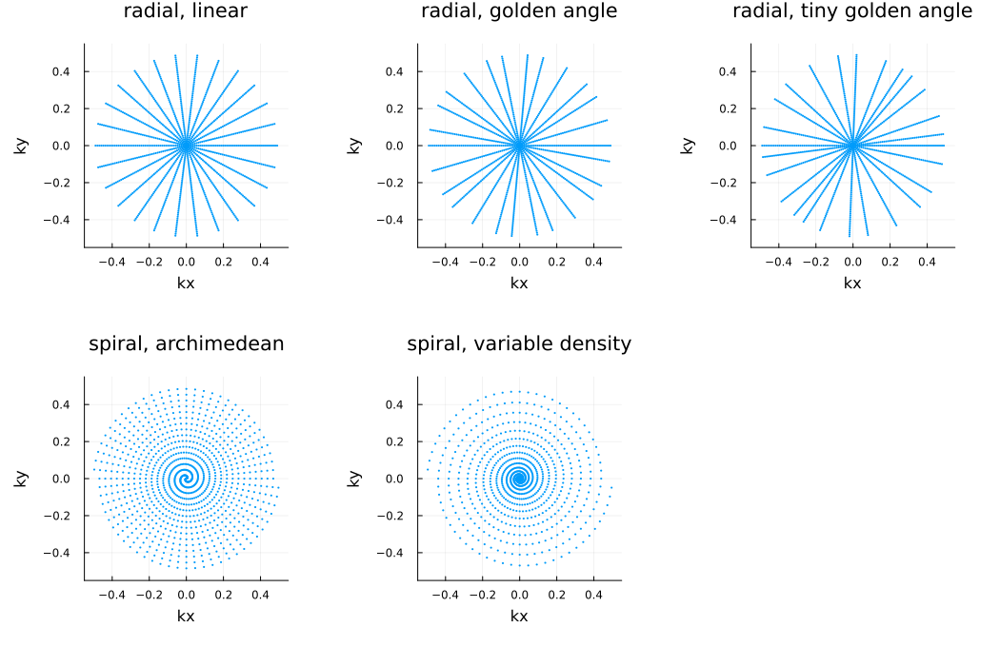
# The two fully 3D families, shown in 3D rather than projected onto kx-ky: stack-of-stars is
# radial in-plane and Cartesian through-plane (the discrete kz "shells"), while kooshball spokes
# point quasi-uniformly over the whole sphere.
plot(
traj_scatter3d(traj_sos; title = "stack of stars (6 partitions)", by_kz = true),
traj_scatter3d(traj_koosh; title = "kooshball");
layout = (1, 2), size = (1000, 480)
)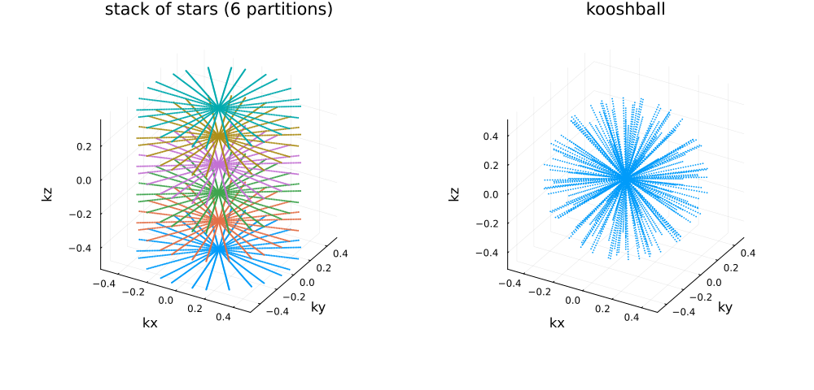
Half spokes, phyllotaxis, FLORET and SPARKLING
center_out = true(onradial_trajectory,stack_of_stars_trajectory,kooshball_trajectoryandphyllotaxis_trajectory) acquires half spokes, from the k-space center outwards, as UTE and ZTE-like sequences do. A half spoke is a ray, so the angle increments double: the golden angle becomes2π/φ ≈ 222.5°.phyllotaxis_trajectory(nsamples, nspokes; interleaves)— 3D radial with the spoke tips on a spiral phyllotaxis (Piccini et al. 2011): golden-angle azimuths, polar angle(π/2)√(n/N). With a Fibonacci number of interleaves each interleave is a smooth spiral from the pole to the equator, one per heartbeat in whole-heart imaging.floret_trajectory(nsamples, ninterleaves; nhubs = 3)— FLORET (Pipe et al. 2011): center-out Fermat spirals wound on cones about up to three orthogonal hub axes.sparkling_trajectory(nsamples, nshots; ndims)— SPARKLING (Lazarus et al. 2019): shots optimized so their samples follow a variable target density, within a maximum step (gradient amplitude) and a maximum change of step (slew rate) per sample. The optimization takes some seconds, more for 3D.
traj_half = radial_trajectory(48, 21; center_out = true)
traj_spark = sparkling_trajectory(512, 12; iterations = 100)
function traj_lines(traj; title = "", kwargs...)
t = unname(traj)
return plot(
[t[1, :, s] for s in axes(t, 3)], [t[2, :, s] for s in axes(t, 3)];
lw = 0.8, legend = false, aspect_ratio = 1, xlabel = "kx", ylabel = "ky",
xlim = (-0.55, 0.55), ylim = (-0.55, 0.55), title, kwargs...
)
end
plot(
traj_scatter(traj_half; title = "half spokes, golden angle"),
traj_lines(traj_spark; title = "SPARKLING, 12 shots"),
traj_scatter(traj_spark; title = "SPARKLING samples");
layout = (1, 3), size = (1050, 360)
)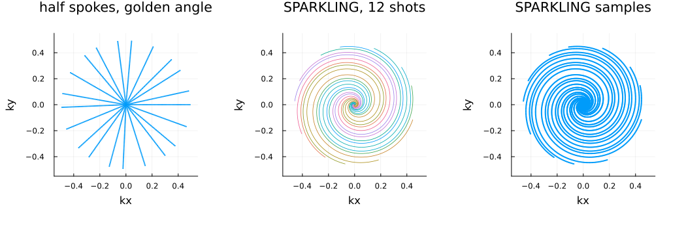
# Each interleave of the phyllotaxis, each hub of FLORET and each shot of 3D SPARKLING in its own
# colour. A 3D line per arm shows the path the gradients trace; the phyllotaxis interleave is
# drawn through its spoke tips.
traj_phyllo = phyllotaxis_trajectory(32, 377; interleaves = 13)
traj_floret = floret_trajectory(256, 4)
traj_spark3d = sparkling_trajectory(256, 16; ndims = 3, iterations = 60)
function phyllotaxis_tips(traj, interleaves)
tips = unname(traj)[:, end, :]
per = size(tips, 2) ÷ interleaves
p = plot(; xlabel = "kx", ylabel = "ky", zlabel = "kz", legend = false, title = "phyllotaxis, $interleaves interleaves")
for i in 1:interleaves
sel = ((i - 1) * per + 1):(i * per)
plot!(p, tips[1, sel], tips[2, sel], tips[3, sel]; marker = :circle, markersize = 1.5, markerstrokewidth = 0, lw = 0.6, color = i)
end
return p
end
function arms3d(t, title; color_by = s -> 1)
p = plot(; xlabel = "kx", ylabel = "ky", zlabel = "kz", legend = false, title)
for s in axes(t, 3)
plot!(p, t[1, :, s], t[2, :, s], t[3, :, s]; lw = 0.6, color = color_by(s))
end
return p
end
floret_arms = reshape(unname(traj_floret), 3, 256, :)
plot(
phyllotaxis_tips(traj_phyllo, 13),
arms3d(floret_arms, "FLORET, 3 hubs × 4 arms"; color_by = s -> (s - 1) ÷ 4 + 1),
arms3d(unname(traj_spark3d), "3D SPARKLING, 16 shots"; color_by = identity);
layout = (1, 3), size = (1200, 420)
)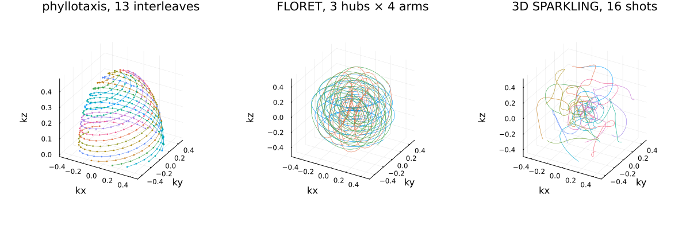
2. Simulating a non-Cartesian acquisition
AcquisitionInfo(; trajectory, image_size, sensitivity_maps) is the advertised constructor — no k-space placeholder is needed. simulate_acquisition handles non-Cartesian trajectories exactly like Cartesian ones: it builds the encoding operator, applies it to the image, and returns a new acquisition object with the k-space data filled in.
To keep the comparisons below honest the data avoid the inverse crime (see the Simulation tutorial): the object is rasterized area-sampled on a grid about 1.6 times finer than the reconstruction, the coil maps act on that finer grid, and the returned acquisition carries no maps — §4 estimates them from the data. Images are scored against the same object area-sampled at the reconstruction size.
nx, ny = 96, 96
nsamp, nspokes = 128, 96
nfine = 154 # ≈ 1.6 × 96
traj = radial_trajectory(nsamp, nspokes; ordering = GoldenAngle())
area_sampled_phantom(n) = create_shepp_logan_phantom(
n, n, :axial; ti = MRISheppLoganIntensities(), eltype = ComplexF32, supersample = 4
)
x_true = area_sampled_phantom(nx)
smaps_fine = coil_sensitivities(nfine, nfine, 4)
acq_radial = AcquisitionInfo(; trajectory = traj, image_size = (nx, ny), sensitivity_maps = smaps_fine)
data_radial = simulate_acquisition(area_sampled_phantom(nfine), acq_radial; keep_sensitivity_maps = false)
println("radial k-space: ", size(data_radial.kspace_data))
# Radial Nyquist needs about (π/2)·N spokes; fewer than that is undersampling.
println("spokes: ", nspokes, " of the ", ceil(Int, π / 2 * nx), " a fully sampled radial scan would need")
# Non-Cartesian k-space is stored as a list of samples, not on a grid, so this panel's axes are
# the sample index along a spoke and the spoke index — not kx and ky. Where each of those samples
# actually sits in k-space is what the scatter plots in section 1 show.
jim(
log.(abs.(data_radial.kspace_data[:, :, 1]) .+ 1.0f-6);
title = "log |k-space|, coil 1", xlabel = "sample along spoke", ylabel = "spoke",
size = (450, 350),
)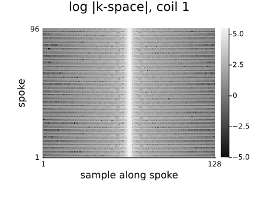
3. The NFFT encoding operator — density compensation is opt-in
get_encoding_operator builds an NFFT-based operator (from NFFTOperators.jl) whenever the acquisition carries a trajectory; everything downstream — reconstruct, regularizers — works exactly as in the Cartesian case.
Density compensation is opt-in, and it is opt-in the same way at both levels of the API:
- High level. An acquisition carries its weights in
acq.dcf, which is empty untildensity_compensation(acq; method)(§4) fills it.reconstructuses whatever is there, so "with DCF" versus "without DCF" is a property of the acquisition, not an argument of the call. - Low level.
get_encoding_operator(acq)forwardsacq.dcfto the NFFT operator; thedcfkeyword overrides it, withdcf = :autorunning the Pipe–Menon estimator inline.
The default is no weighting, and that default is a mathematical statement: with no DCF, 𝒜' is the true adjoint of 𝒜, which is what an iterative solver needs. A DCF turns 𝒜' into an approximate inverse instead — what a one-shot gridding reconstruction needs, and what §4 is about.
𝒜_nodcf = get_encoding_operator(data_radial)
x_adjoint_nodcf = 𝒜_nodcf' * data_radial.kspace_data # no maps yet: one image per coil
println("no DCF: adjoint magnitude range = ", extrema(abs.(x_adjoint_nodcf)))
jim(abs.(x_adjoint_nodcf[:, :, 1]); title = "plain adjoint, no DCF (coil 1)", size = (380, 350))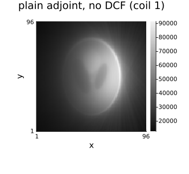
The plain adjoint is dominated by the heavily oversampled k-space center — the image below is badly blurred. This is expected: without density compensation the adjoint is not an estimate of the inverse, it is the exact adjoint of an operator that oversamples low frequencies.
4. Density compensation — Pipe–Menon and Voronoi
PipeMenonDCF()— iterative, works for any trajectory in 2D or 3D (the default method fordensity_compensation).VoronoiDCF()— geometric, exact areas of the Voronoi cells, 2D only. Cells at the edge of the sampled disc are unbounded in an ordinary Voronoi diagram;VoronoiDCFclips every cell against a bounding box (bounds, default(-0.5, 0.5, -0.5, 0.5), the same domain the trajectory itself is normalized to) before computing its area, so the outermost samples get a finite weight instead of an infinite one.
Both estimators are wrong at the ends of a readout, and both correct it by default. The last sample of a spoke has no neighbour beyond it, and each method fails in its own way: Voronoi's clip against the bounding box has nothing to do with the sampling density, so the outermost sample comes out tens of times too heavy; Pipe–Menon's iteration sees the same one-sided neighbourhood and rings over the last few samples. Left alone, those weights multiply the noisiest, highest-frequency samples of the acquisition. edge_correction = true (the default on both) replaces edge_samples weights at each end of every readout with the trend of the samples just inside — see correct_dcf_edges — and edge_correction = false shows what the estimator produced on its own, which is what the plot below does.
The weights are stored on the acquisition (acq.dcf) and forwarded to the Fourier operator, so reconstruct picks them up automatically.
acq_pipe = density_compensation(data_radial; method = PipeMenonDCF(maxit = 20))
acq_voronoi = density_compensation(data_radial; method = VoronoiDCF())
raw_pipe = density_compensation(data_radial; method = PipeMenonDCF(maxit = 20, edge_correction = false))
raw_voronoi = density_compensation(data_radial; method = VoronoiDCF(edge_correction = false))
println("Pipe–Menon DCF: ", size(acq_pipe.dcf), " ", eltype(acq_pipe.dcf))
println("Voronoi DCF all finite: ", all(isfinite, acq_voronoi.dcf), ", range = ", extrema(acq_voronoi.dcf))
println(
"outermost Voronoi weight, uncorrected/corrected: ",
round(raw_voronoi.dcf[1, 1] / acq_voronoi.dcf[1, 1], digits = 1), "x"
)
# A spoke runs from one edge of k-space through the centre to the other, so *both* ends of the
# horizontal axis are the outer edge and the dip in the middle is DC. Both panels are drawn on the
# same vertical scale — the corrected one's — so the uncorrected spikes run off the top of the left
# panel rather than squashing the ramp they are supposed to be compared against.
dcf_ylim = (0.0, 1.15 * maximum(acq_voronoi.dcf))
function dcf_panel(pipe, voronoi, title)
p = plot(
pipe[:, 1]; label = "Pipe–Menon", lw = 2, xlabel = "readout sample", ylabel = "weight",
title, legend = :top, ylim = dcf_ylim
)
plot!(p, voronoi[:, 1]; label = "Voronoi", lw = 2)
return p
end
plot(
dcf_panel(raw_pipe.dcf, raw_voronoi.dcf, "edge_correction = false"),
dcf_panel(acq_pipe.dcf, acq_voronoi.dcf, "edge_correction = true (default)");
layout = (1, 2), size = (950, 340)
)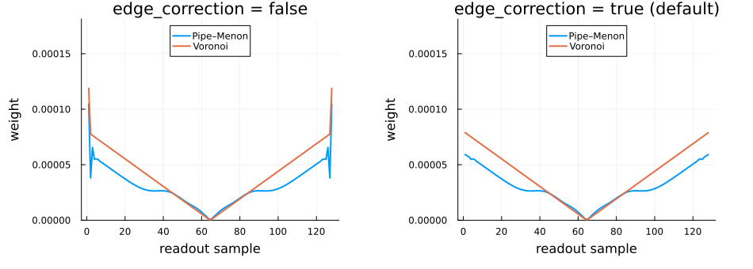
Calibrating sensitivity maps from non-Cartesian samples
Every sensitivity estimator reads a calibration window out of a Cartesian grid, which these samples are not — but estimate_sensitivities takes the non-Cartesian acquisition directly and does the gridding itself: a density-compensated NFFT adjoint, back to Cartesian k-space, then the estimator. It uses acq.dcf when the acquisition carries one (as acq_pipe does now) and :auto otherwise, so the maps do not inherit the blur the unweighted adjoint of §3 has.
The maps come back on the same centred image grid the non-Cartesian reconstruction uses, so they can be attached and used without any fftshift of your own. A series with a :time axis is averaged over that axis before calibrating (average_dims); see 10_real_data_dynamic §10, which does this on a real spiral scan.
acq_pipe = estimate_sensitivities(acq_pipe; method = ESPIRiT(calib_size = 24, kernel_size = 6))
maps_estimated = acq_pipe.sensitivity_maps
# The maps come back in the same flavour as the k-space they were calibrated from: a plain array
# here, since this tutorial's simulated data carries no dimension names, and a `NamedDimsArray`
# with `(:x, :y, :coil)` when it does.
println("estimated maps: ", size(maps_estimated), " ", typeof(maps_estimated))
# Sensitivity maps are defined only up to one common phase per pixel, so the honest comparison is
# of magnitudes; the estimate is zero where ESPIRiT's eigenvalue test finds no coil signal, which
# is the black background the simulated maps do not have.
side_by_side(
abs.(coil_sensitivities(nx, ny, 4)[:, :, 1]), abs.(unname(maps_estimated)[:, :, 1]);
titles = ("|S| coil 1, simulated", "|S| coil 1, estimated"), size = (900, 420)
)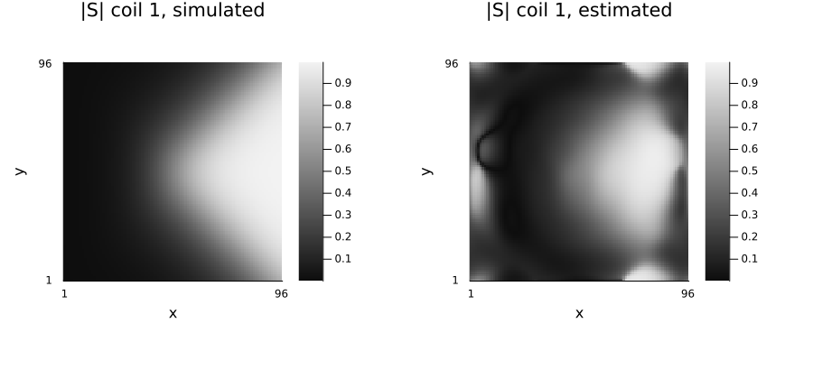
The estimated maps are attached to every acquisition that is reconstructed from here on.
data_radial = AcquisitionInfo(data_radial; sensitivity_maps = maps_estimated)
acq_voronoi = AcquisitionInfo(acq_voronoi; sensitivity_maps = maps_estimated)NonCartesianAcquisitionInfo:
- kspace data = Array{ComplexF32}<128×96×4>
- trajectory = Array{Float32}<2×128×96>
- dcf = Array{Float32}<128×96>
- encoding = 2D
- image size = 96×96
- sensitivity maps = ComplexF32<96×96×4>x_nodcf = reconstruct(data_radial)
x_pipe = reconstruct(acq_pipe)
x_voronoi = reconstruct(acq_voronoi)
function aligned_scale(x̂)
a = abs.(unname(x̂))
return sum(a .* abs.(x_true)) / sum(abs2, a)
end
function aligned_nrmse(x̂)
a = abs.(unname(x̂))
return norm(aligned_scale(x̂) .* a - abs.(x_true)) / norm(abs.(x_true))
end
println("adjoint, no DCF ", round(aligned_nrmse(x_nodcf), digits = 4))
println("adjoint, Pipe ", round(aligned_nrmse(x_pipe), digits = 4))
println("adjoint, Voronoi ", round(aligned_nrmse(x_voronoi), digits = 4))
# The no-DCF adjoint is ~10^5x the scale of the DCF-corrected ones (§3), so every panel gets its
# own color scale (`clim = :each`): on a shared one the corrected panels would be solid black,
# and the comparison here is about structure, not units.
side_by_side(
unname(x_nodcf), unname(x_pipe), unname(x_voronoi);
titles = ("no DCF", "Pipe-Menon", "Voronoi (clipped)"), clim = :each, size = (1050, 350)
)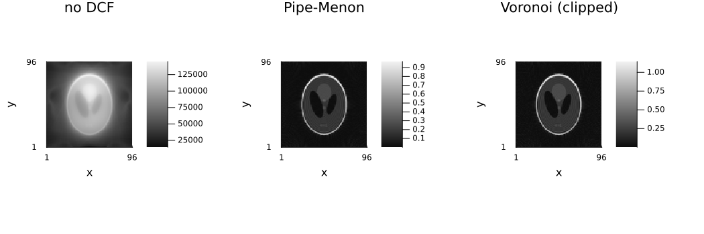
The plain (no-DCF) adjoint is badly blurred by the oversampled k-space center, exactly as in §3. Both DCF methods correct for this. With the bounding-box clipping and the edge correction, VoronoiDCF gives a result close to PipeMenonDCF on this golden-angle trajectory rather than the "edge samples blow up" failure an unclipped Voronoi diagram would show.
5. Iterative and regularized reconstruction
An iterative solve does not need a DCF at all — it inverts the operator instead of approximating the inverse with a weighted adjoint — but a good DCF still makes a useful starting point, and the regularizers behave exactly as in the Cartesian case.
x_cg = reconstruct(
data_radial, IterativeReconstruction(L2Image(1.0f-4); algorithm = CGNR(), maxit = 20)
)
x_tv = reconstruct(
data_radial, IterativeReconstruction(TotalVariation2D(1.0f-3); maxit = 40)
)
println("CG-SENSE ", round(aligned_nrmse(x_cg), digits = 4))
println("TV-regularized ", round(aligned_nrmse(x_tv), digits = 4))
side_by_side(x_pipe, x_cg, x_tv; titles = ("gridded adjoint", "CG-SENSE", "TV compressed sensing"), size = (1050, 350))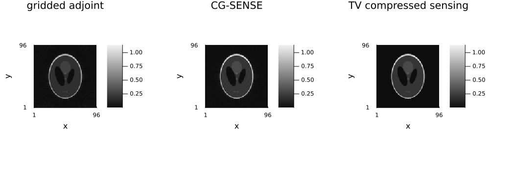
# Fewer spokes: the regime where the regularizer earns its keep.
nspokes_us = 32
traj_us = unname(traj)[:, :, 1:nspokes_us]
acq_us = AcquisitionInfo(; trajectory = traj_us, image_size = (nx, ny), sensitivity_maps = smaps_fine)
data_us = simulate_acquisition(area_sampled_phantom(nfine), acq_us; keep_sensitivity_maps = false)
# The densely sampled k-space centre of a radial scan is enough to calibrate from, even at 32
# spokes.
maps_us = estimate_sensitivities(density_compensation(data_us); method = ESPIRiT(calib_size = 24, kernel_size = 6)).sensitivity_maps
data_us = AcquisitionInfo(data_us; sensitivity_maps = maps_us)
println(
"spokes: ", nspokes_us, " (acceleration ≈ ",
round(ceil(π / 2 * nx) / nspokes_us, digits = 1), "× relative to radial Nyquist)"
)
x_us_adj = reconstruct(density_compensation(data_us))
x_us_tv = reconstruct(data_us, IterativeReconstruction(TotalVariation2D(2.0f-3); maxit = 60))
println("adjoint + DCF ", round(aligned_nrmse(x_us_adj), digits = 4))
println("TV ", round(aligned_nrmse(x_us_tv), digits = 4))
side_by_side(
x_us_adj, x_us_tv;
titles = ("$(nspokes_us) spokes, gridded", "$(nspokes_us) spokes, TV"), size = (700, 350)
)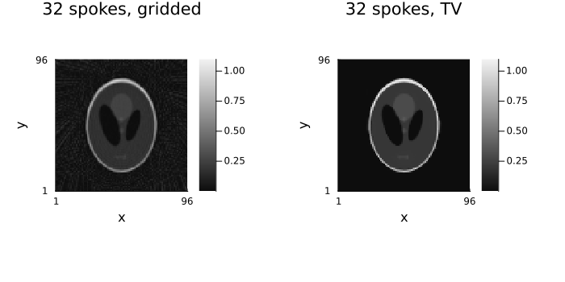
6. Gradient-delay correction
Gradient hardware delays and eddy currents move the actually sampled k-space positions away from the nominal trajectory, which blurs the image and produces streak and ring artefacts. The usual model gives each spoke with direction $\mathbf n$ the displacement $S\mathbf n$, with a symmetric 2×2 delay tensor $S$ (Peters et al. [1]; Moussavi et al.): an isotropic delay ($S \propto I$) slides every spoke along itself, an anisotropic one also moves it sideways. Two estimators read $S$ from the radial data itself:
OpposingSpokes()[5] pairs each spoke with the one pointing the opposite way. The delay moves both along their own direction, i.e. in opposite directions in k-space, so the sub-sample shift that aligns the two complex profiles is twice the delay. Needs spokes over the full circle.RING()[2] finds where pairs of nearly orthogonal spokes really intersect — the point where both measure the same complex value — and solves for $S$. Works on any ordering and from few spokes; the default.
Both return (dx = Sxx, dy = Syy, dxy = Sxy) in trajectory units.
Nsamples, Nspokes = 64, 96
angles = range(0, 2π; length = Nspokes + 1)[1:Nspokes]
r = Float32.(range(-0.45, 0.45; length = Nsamples))
dr = r[2] - r[1]
# The data are simulated from the object area-sampled on a grid about 1.6 times finer than the
# reconstruction (see the Simulation tutorial), so they do not share the reconstruction's
# discretisation (no inverse crime); images are scored against the same object area-sampled at
# the reconstruction size.
nxg, nyg = 64, 64
nfine_gd = 102 # ≈ 1.6 × 64
gd_phantom(n) = create_shepp_logan_phantom(n, n, :axial; ti = MRISheppLoganIntensities(), eltype = ComplexF32, supersample = 4)
x_gd_true = gd_phantom(nxg)
traj_gd_nominal = zeros(Float32, 2, Nsamples, Nspokes) # what the sequence intended
for s in 1:Nspokes
traj_gd_nominal[1, :, s] = r .* cos(angles[s])
traj_gd_nominal[2, :, s] = r .* sin(angles[s])
end
S_true = Float32[1.5 0.4; 0.4 -0.8] .* dr # delay tensor: 1.5 / -0.8 samples, 0.4 cross term
traj_gd_actual = copy(traj_gd_nominal) # where the samples really are
for s in 1:Nspokes
traj_gd_actual[:, :, s] .+= S_true * [cos(angles[s]), sin(angles[s])]
end
# The displacement is a fraction of a sample, invisible at full scale; what it moves is the point
# each spoke takes for k = 0 (left: the nominal centres all sit at the origin, the actual ones on a
# small closed curve) and the spokes' offset along and across themselves (right).
centre(traj, s) = (sum(traj[1, :, s]) / Nsamples, sum(traj[2, :, s]) / Nsamples)
p_centre = scatter(
[centre(traj_gd_actual, s)[1] for s in 1:Nspokes] ./ dr, [centre(traj_gd_actual, s)[2] for s in 1:Nspokes] ./ dr;
aspect_ratio = 1, markersize = 4, markerstrokewidth = 0, label = "actual",
xlabel = "kx (samples)", ylabel = "ky (samples)", title = "k = 0 of each spoke", legend = :outertopright,
)
scatter!(p_centre, [0.0], [0.0]; markersize = 6, marker = :xcross, color = :crimson, markerstrokecolor = :crimson, markerstrokewidth = 1.6, label = "nominal")
along_gd = [dot(S_true * [cos(θ), sin(θ)], [cos(θ), sin(θ)]) / dr for θ in angles]
across_gd = [dot(S_true * [cos(θ), sin(θ)], [-sin(θ), cos(θ)]) / dr for θ in angles]
p_shift = plot(
rad2deg.(angles), [along_gd across_gd]; lw = 2, label = ["along the spoke" "across the spoke"],
xlabel = "spoke angle (deg)", ylabel = "displacement (samples)", title = "displacement per spoke", legend = :outertopright,
)
plot(p_centre, p_shift; layout = (1, 2), size = (1100, 380))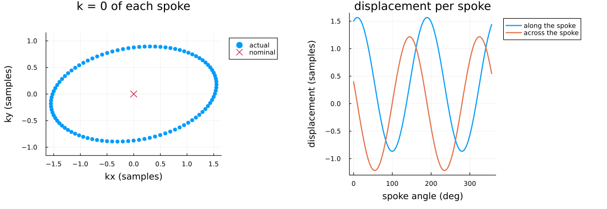
The object is sampled where the spokes really are; a reconstruction that assumes the nominal trajectory shows the artefact.
acq_gd_actual = AcquisitionInfo(;
trajectory = NamedDimsArray{(:coord, :kx, :ky)}(traj_gd_actual), image_size = (nxg, nyg)
)
data_gd = simulate_acquisition(gd_phantom(nfine_gd), acq_gd_actual)
acq_gd_naive = AcquisitionInfo(
data_gd.kspace_data;
trajectory = NamedDimsArray{(:coord, :kx, :ky)}(traj_gd_nominal), image_size = (nxg, nyg)
)
x_gd_naive = reconstruct(density_compensation(acq_gd_naive; method = PipeMenonDCF(maxit = 15)));Both estimators read the delay from these imaging data, with no separate calibration scan:
tensor(d) = [d.dx d.dxy; d.dxy d.dy]
@printf("%-15s %8s %8s %8s (samples)\n", "", "Sxx", "Syy", "Sxy")
@printf("%-15s %8.3f %8.3f %8.3f\n", "true", S_true[1, 1] / dr, S_true[2, 2] / dr, S_true[1, 2] / dr)
for method in (OpposingSpokes(), RING())
est = estimate_gradient_delays(acq_gd_naive; method)
@printf("%-15s %8.3f %8.3f %8.3f\n", nameof(typeof(method)), est.dx / dr, est.dy / dr, est.dxy / dr)
end Sxx Syy Sxy (samples)
true 1.500 -0.800 0.400
OpposingSpokes 1.384 -0.945 0.325
RING 1.500 -0.800 0.400
correct_gradient_delays moves each spoke by the estimated displacement $S\mathbf n$, including the part across the spoke that an anisotropic delay causes.
function aligned_nrmse_gd(x̂)
a = abs.(unname(x̂))
α = sum(a .* abs.(x_gd_true)) / sum(abs2, a)
return norm(α .* a - abs.(x_gd_true)) / norm(abs.(x_gd_true))
end
acq_gd_fixed = correct_gradient_delays(acq_gd_naive)
x_gd_fixed = reconstruct(density_compensation(acq_gd_fixed; method = PipeMenonDCF(maxit = 15)))
for (name, acq, x) in (("nominal", acq_gd_naive, x_gd_naive), ("corrected", acq_gd_fixed, x_gd_fixed))
@printf(
"%-10s trajectory error %.4f image nrmse %.4f\n", name,
norm(unname(acq.trajectory) - traj_gd_actual), aligned_nrmse_gd(x)
)
end
side_by_side(x_gd_naive, x_gd_fixed; titles = ("uncorrected (delay artefact)", "gradient-delay corrected"), size = (700, 350))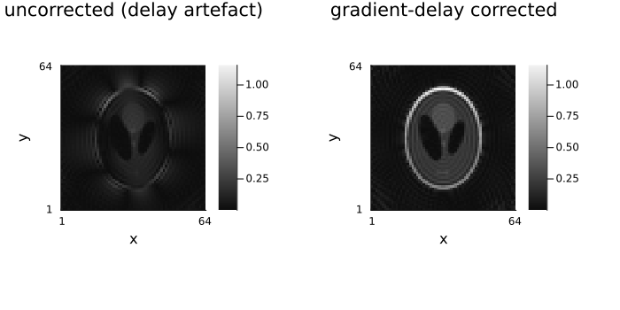
# Correction is refused on Cartesian data — there is no trajectory to correct.
try
correct_gradient_delays(AcquisitionInfo(zeros(ComplexF32, 16, 16); is3D = false))
catch e
println(sprint(showerror, e))
endArgumentError: Gradient delay correction is only applicable to non-Cartesian acquisitions (got CartesianAcquisitionInfo).
7. Accuracy vs. speed of the gridding
get_encoding_operator (and get_fourier_operator) forward m, sigma and precompute straight to NFFT.jl. Left at nothing, Ristretto uses its own default operating point (DEFAULT_NFFT_M = 3, DEFAULT_NFFT_SIGMA = 1.5, DEFAULT_NFFT_PRECOMPUTE = NFFT.TENSOR), a lower-accuracy, faster point than NFFT.jl's own default (m = 5, σ = 2.0), chosen because the accuracy loss is negligible for iterative reconstruction while the speed gain compounds over many forward/adjoint applications per solve. The Performance page has the measurements behind that choice, including its effect on iterative reconstructions.
The table below reports BenchmarkTools' minimum time over a short sample, and the ratios between the three configurations are the reproducible part rather than the absolute milliseconds.
using NFFT
using BenchmarkTools: @belapsed
configs = (
("NFFT.jl default (m=5, σ=2.0, polynomial)", (m = 5, sigma = 2.0, precompute = NFFT.POLYNOMIAL)),
("Ristretto default (m=3, σ=1.5, tensor)", (m = nothing, sigma = nothing, precompute = nothing)),
("fast (m=3, σ=1.25, tensor)", (m = 3, sigma = 1.25, precompute = NFFT.TENSOR)),
)
𝒜_reference = get_encoding_operator(data_radial; m = 5, sigma = 2.0, precompute = NFFT.POLYNOMIAL)
y_reference = 𝒜_reference * x_true
results = map(configs) do (name, c)
𝒜 = get_encoding_operator(data_radial; m = c.m, sigma = c.sigma, precompute = c.precompute)
y = 𝒜 * x_true
best_ms = 1000 * @belapsed $𝒜 * $x_true seconds = 0.5
rel_err = norm(y - y_reference) / norm(y_reference)
(name = name, ms = round(best_ms, digits = 2), rel_err = round(rel_err, digits = 6))
end
println(rpad("configuration", 42), rpad("minimum time (ms)", 20), "rel. error vs. NFFT.jl default")
for r in results
println(rpad(r.name, 42), rpad(r.ms, 20), r.rel_err)
endconfiguration minimum time (ms) rel. error vs. NFFT.jl default
NFFT.jl default (m=5, σ=2.0, polynomial) 2.06 0.0
Ristretto default (m=3, σ=1.5, tensor) 1.0 1.3e-5
fast (m=3, σ=1.25, tensor) 0.91 5.7e-5
Both Ristretto's default and the fast operating point stay within a fraction of a percent of NFFT.jl's most accurate default, at a fraction of the cost; the ordering (accurate ≥ Ristretto default ≥ fast) is what to take away.
References
[1] D. C. Peters, J. A. Derbyshire, and E. R. McVeigh, "Centering the projection reconstruction trajectory: Reducing gradient delay errors," Magnetic Resonance in Medicine, vol. 50, no. 1, pp. 1–6, 2003, doi: 10.1002/mrm.10501 — the delay model.
[2] S. Rosenzweig, H. C. M. Holme, and M. Uecker, "Simple auto-calibrated gradient delay estimation from few spokes using Radial Intersections (RING)," Magnetic Resonance in Medicine, vol. 81, no. 3, pp. 1898–1906, 2019, doi: 10.1002/mrm.27506 (arXiv:1805.04334, open access) — the RING() estimator.
[3] J. I. Jackson, C. H. Meyer, D. G. Nishimura, and A. Macovski, "Selection of a convolution function for Fourier inversion using gridding," IEEE Transactions on Medical Imaging, vol. 10, no. 3, pp. 473–478, 1991, doi: 10.1109/42.97598 — gridding, which the NFFT operator generalizes.
[4] J. G. Pipe and P. Menon, "Sampling density compensation in MRI: Rationale and an iterative numerical solution," Magnetic Resonance in Medicine, vol. 41, no. 1, pp. 179–186, 1999, doi: 10.1002/(SICI)1522-2594(199901)41:1<179::AID-MRM25>3.0.CO;2-V (doi.org) — the PipeMenonDCF density compensation.
[5] K. T. Block and M. Uecker, "Simple method for adaptive gradient-delay compensation in radial MRI," Proc. Intl. Soc. Mag. Reson. Med. 19, 2816 (2011) — the OpposingSpokes() estimator.
Further reading
From Questions and Answers in MRI:
- k-space: trajectories — the families this tutorial generates, and how the gradients draw them.
- Radial sampling — why radial is motion-robust, and what gridding and density compensation are for.
- Spiral and radial artifacts — the streaks, blurring and off-resonance swirls these trajectories fail with, including the gradient-delay artefacts §4 corrects.
Lectures and tutorials elsewhere:
- Stanford EE369C lecture notes on non-uniform reconstruction, gridding and density estimation and gridding kernel design — the NFFT and the density compensation of §3–4, and the kernel-width/oversampling trade-off of §7.
Environment
print_versions()Julia Version 1.13.3
Commit 67ac47b9cd8 (2026-10-25 15:28 UTC)
Build Info:
Official https://julialang.org release
Platform Info:
OS: Linux (x86_64-linux-gnu)
CPU: 4 × AMD EPYC 7763 64-Core Processor
WORD_SIZE: 64
LLVM: libLLVM-20.1.8 (ORCJIT, znver3)
GC: Built with stock GC
Threads: 4 default, 1 interactive, 4 GC (on 4 virtual cores)
Environment:
JULIA_PKG_SERVER_REGISTRY_PREFERENCE = eager
JULIA_NUM_THREADS = 4
Ristretto 0.1.0 (dev)
AbstractOperators not loaded
FFTWOperators not loaded
NFFTOperators not loaded
WaveletOperators not loaded
DSPOperators not loaded
ContourletOperators not loaded
StructuredOptimization not loaded
ProximalOperators not loaded
ProximalAlgorithms not loaded
OperatorCore not loaded
NestedThreading 0.1.3